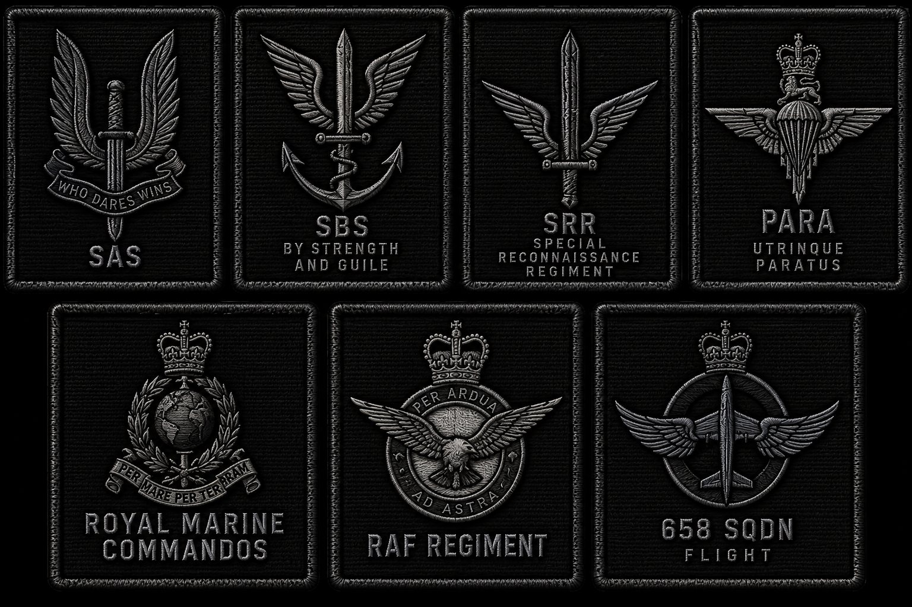
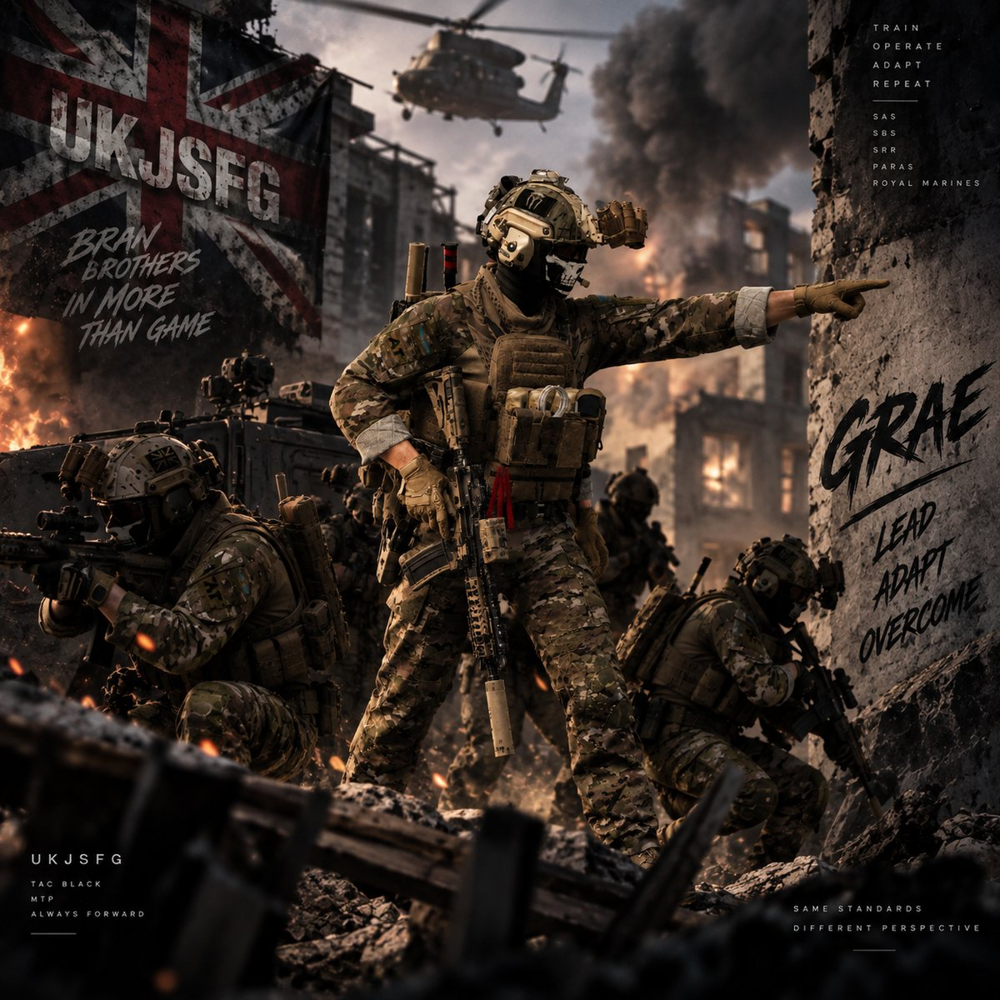
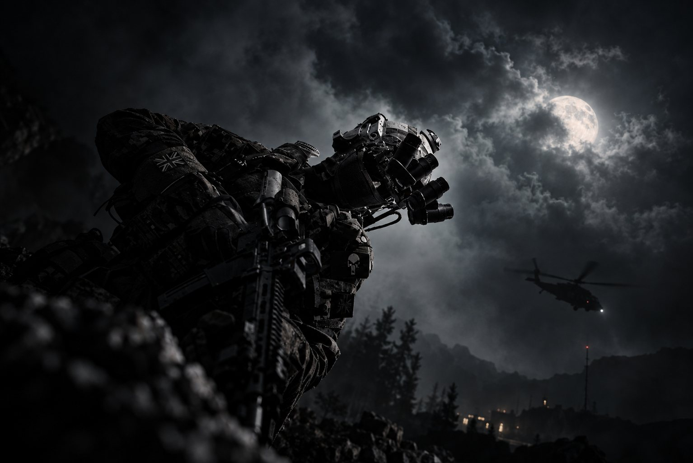
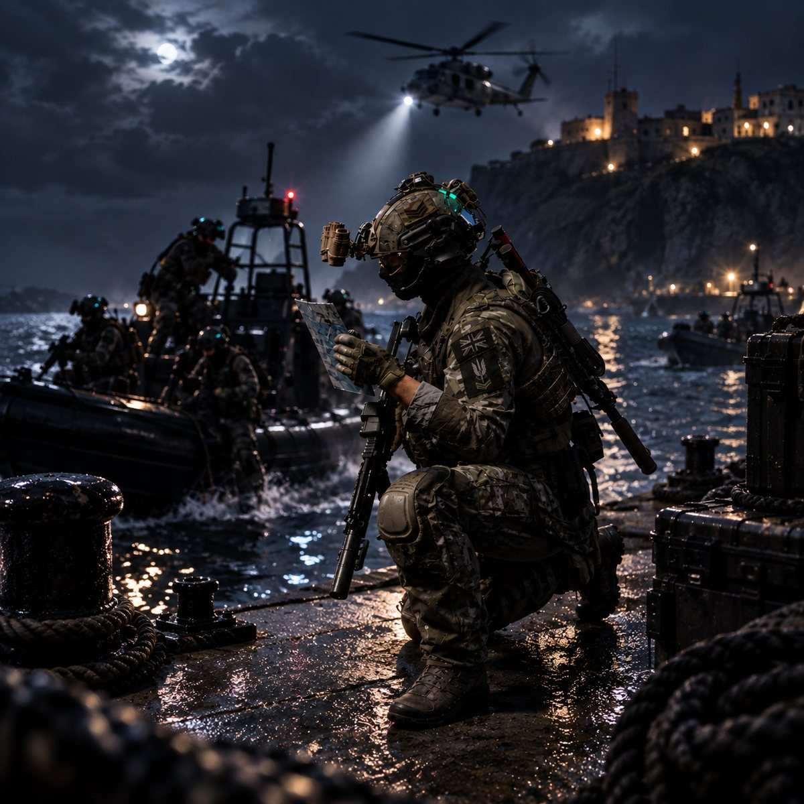
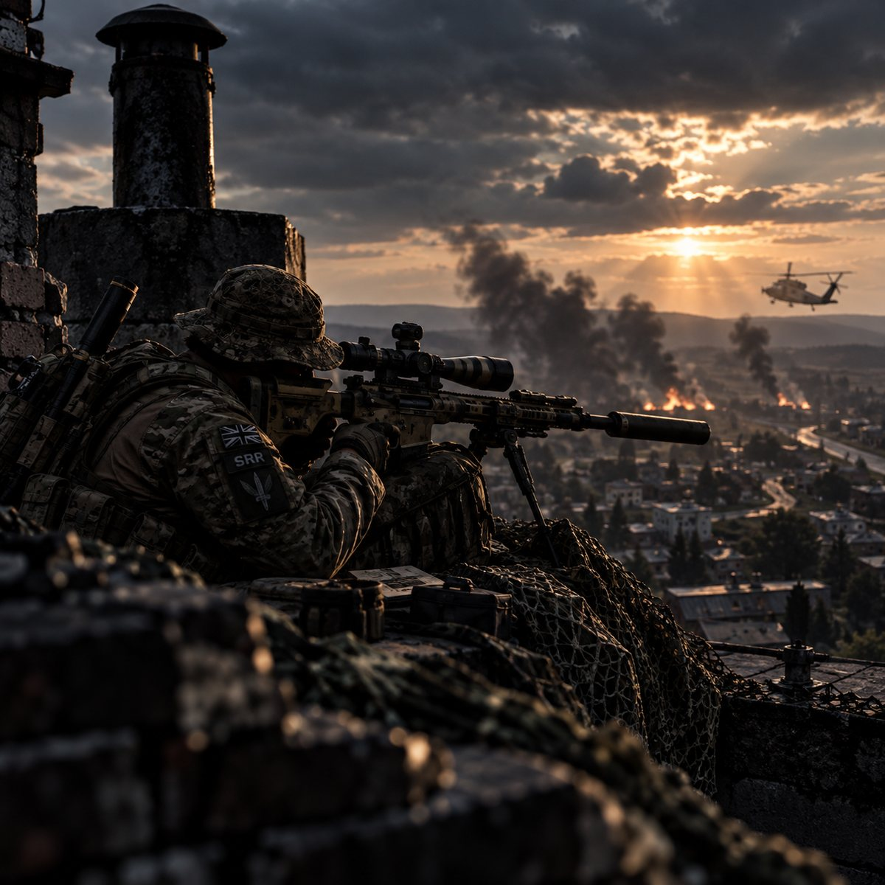
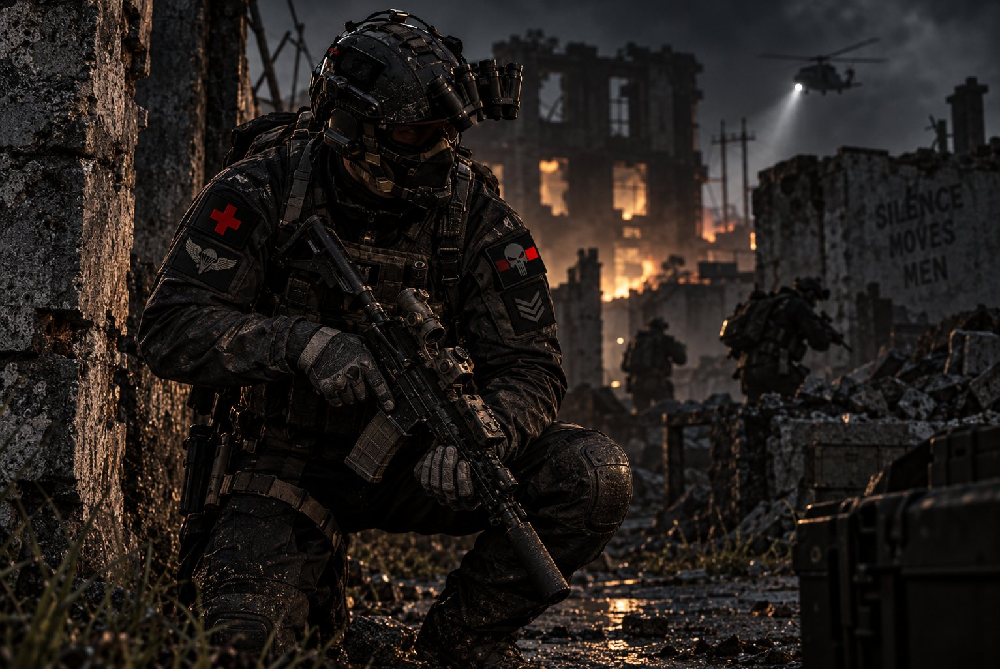
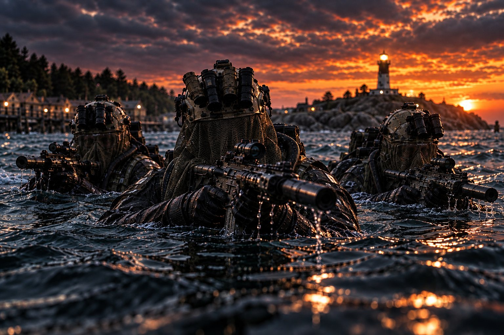
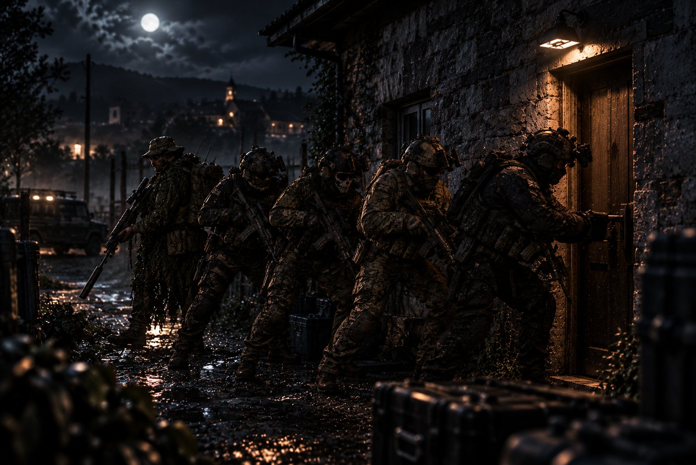
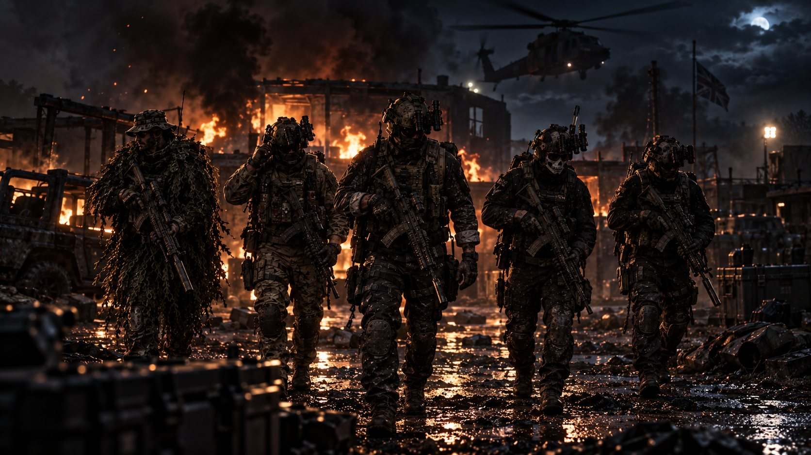
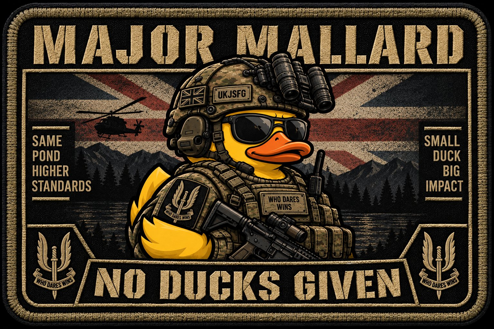

Training supported by individuals with previous and currently active Armed Forces experience.
UNITED KINGDOM // ARMA REFORGER MILSIM
UKJSFG
UK JOINT SPECIAL FORCES GROUP
TRAIN. PROGRESS. BELONG.
RECRUITMENT // OPEN
01 // ABOUT UKJSFG
STRUCTURE WITHOUT LOSING THE FUN.MORE THAN JUST AN ARMA SERVER.
UKJSFG is a UK-focused Arma Reforger MilSim community built around teamwork, immersion, structured training and organised gameplay.
Whether you already know MilSim or you are completely new to structured Reforger, what matters is being willing to communicate, learn and work as part of a team.
Develop your skills, progress through the ranks and find a role that suits how you want to play.
Organised training, community events and immersive gameplay with multiple UKJSFG elements.
A growing group built around standards, teamwork and enjoying Arma Reforger together.
02 // FIND YOUR PLACE
SEVEN ELEMENTS. ONE GROUP.CHOOSE YOUR UNIT

Public unit information is recruitment-focused. Operational planning and internal mission information remain within UKJSFG.
03 // DEVELOPMENT
BUILD YOUR PLACE IN THE GROUP.TRAIN. PROGRESS. SPECIALISE.
PROGRESSION THAT MEANS SOMETHING.
Develop through structured training and progression with a complete UKJSFG Tac Black rank system.


FIND THE ROLE THAT FITS.
Build experience across the roles used throughout the group.
04 // THE PEOPLE BEHIND UKJSFG
COMMAND & ADMINISTRATIONMEET THE TEAM

OWNER / ADMIN // SBS
2LT GRAE
SECOND LIEUTENANT
CO-OWNER / ADMIN // SAS
RSM HYLANDAR
REGIMENTAL SERGEANT MAJOR
ADMIN // SBS
SGT FUBZY
SERGEANT
ADMIN // SRR
SGT KYLES
SERGEANT
ADMIN // SAS
SGT MENZY
SERGEANT05 // SEE THE GROUP
COMMUNITY. TRAINING. GAMEPLAY.UKJSFG IN ACTION




06 // FORCE STATUS
OPERATIONAL READINESS
UKJSFG STATUS
CURRENT STATUS
PRE DEPLOY
UKJSFG elements are currently in pre-deployment. Final training, preparation and force readiness activities are underway.
CURRENT ACTIVITY
PRE-DEPLOYMENT TRAINING
OPERATIONAL STATUS
PREPARING
DEPLOYMENT STATUS
PRE DEPLOYMENT
THREAT LEVEL
IMMINENT
FORCE READINESS
HIGH
07 // RECRUITMENT01 02 03 REQUEST ENTRY — JOIN DISCORD
READY TO STEP THROUGH THE GATE?
Your place in UKJSFG starts here.
JOIN DISCORD
Enter the UKJSFG community and start your application.
APPLICATION
Tell us a little about yourself and what you are looking for from MilSim.
MEET THE TEAM
Successful applicants move forward with the UKJSFG team and begin their journey.